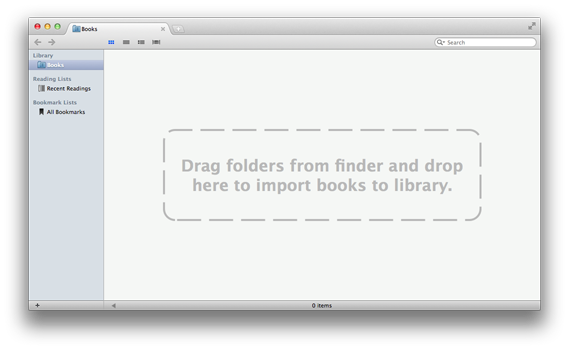
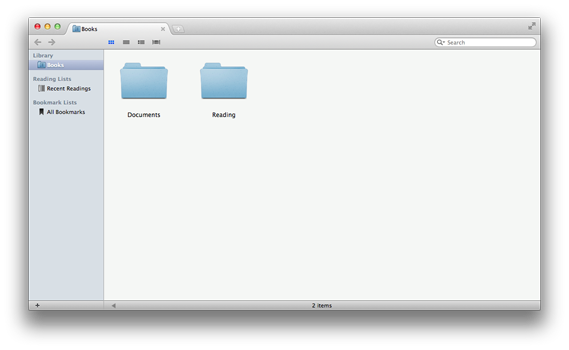

Books Management
Clearview was designed to manage books with simplicity. So it cooperates with Finder to make things easy.
Organize your book files in Finder first
Clearview do not make any copies of book files, and it do not organize files directly. If you have many book files scattered around, you should organize these files with folders in Finder before importing them to Clearview. If you are a books deep lover and already have a books library in Finder, things will be really simple.
Importing of book files
When you launch Clearview the first time, you will see the above tip telling you to drag folders from Finder to import books to Clearview.
Drag the folders containing the book files that you want to read in Clearview from finder and drop on the Clearview shelf, all the books information will be imported to the library quickly, then you can browse the folders, search for book files or open the books from shelf easily, just like in finder.
For example, if you have some documents in the ~/Documents directory and some ebooks in the ~/Reading directory in Finder, drag these two folders from Finder to Clearview shelf, you will get a library view like the following image:
Then you can visit the books in "Documents" and "Reading" like in Finder now.
Important tip:
Clearview do not support importing of book files directly to Clearview library from V1.3.0. You should organize the files with folders in Finder, then import the folders.
Make book collections
Collection is a quick list for handy reading. It is convenient to put some books which you may read often or recently to a collection.
Some collections examples:
"Books for the xxx project""To read this weekend""References Books""To read for preparing my thesis"
To create a collection, just click the plus button at the bottom left of the shelf sidebar. Then you can drag some book items from Clearview books library, other collections or even Finder and drop on the collection, now you have these books references in the collection.
You should know that a book collection only contain book references, removing a book from a collection do not mean that this book will be removed from the books library or Finder.